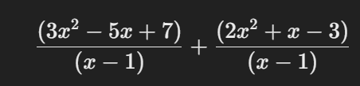
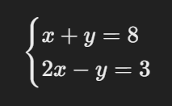

tiempo restante del examen: 180:00
1. ¿Cuál es la raÃz cuadrada de 144?
2. ¿Cuál es el elemento quÃmico con el sÃmbolo H?
3.¿Cuál es el valor de x en la ecuación 2x-4=12?
4.Si un triángulo tiene una base de 5 cm y una altura de 12 cm, ¿cuál es su área?
5.Si 3x + 5 = 20, ¿Cuál es el valor de x?
6.¿Cuál es el valor de √81?
7.¿Si un cÃrculo tiene radio de 5 cm, ¿cuál es su área?
8.El valor de det ( 1/3, 2/4 )es:
9.¿Si f(x) = 2x². + 3x +5,¿Cuál es el valor de f(2)?
10.Si x² + 6x +5 = 0¿cuáles son las raÃces de la ecuación?
11.¿¿Cuál es el valor de lim𝑥→0 sin𝑥/𝑥?
12.¿Si el logaritmo de 𑥠en base 2 es 3, es decir, log2 𑥠= 3 ¿Cuál es el calor de x?
13.Si 𝑓(𝑥)= 𝑥³ - 3𝑥² + 2𑥠¿cuál es la derivada de 𝑓(𝑥)
14.Si ğ‘ + ğ‘ = 8 y ab = 15, ¿Cuál es el valor de 𑲠+ ğ‘²?
15.Factoriza la expresión 𝑥³ - 6𝑥² + 11𝑥 - 6
16. Resuelve la ecuación cuadrática 2𝑥² - 5𝑥 - 2 = 0
17.Si 𝑥 + 1/𝑥 = 4 ¿Cuál es el valor de 𝑥² + 1/𝑥²?
18. Si 3𑥠- 2y = 5 y 𑥠+ 4y = 10 ¿Cuál es el valor de x + y?
19.¿Cuál es el mÃnimo común múltiplo (MCM) de 18, 24 y 36?
20. La suma de los divisores de 28 es:
21.Si un número es divisible por 6 y 9, ¿cuál es el menor número que cumple esta condición?
22.Un número de 3 cifras es tal que la suma de sus cifras es 9 y la suma del cuadrado de sus cifras es 41. ¿Cuál es el número?
23.Un tren de 150 metros de largo pasa un poste en 10 segundos. ¿A qué velocidad (en km/h) viaja el tren?
24. Si la suma de tres números consecutivos es 147, ¿cuál es el número del medio?
25. Un tanque tiene dos llaves: la primera lo llena en 5 horas y la segunda en 3 horas. Si ambas llaves se abren al mismo tiempo, ¿en cuánto tiempo se llena el tanque?
26. Un agricultor tiene pollos y ovejas. Si cuenta 40 cabezas y 120 patas, ¿cuántas ovejas tiene?
27. Un número multiplicado por su inverso da 1. Si sumamos 4 al número original, obtenemos 5. ¿Cuál es el número?
28. Si un reloj se adelanta 3 minutos cada hora, ¿cuánto se adelanta en 24 horas?
29.Un ciclista recorre 100 km a una velocidad de 25 km/h y luego 100 km a 50 km/h. ¿Cuál es su velocidad promedio?
30. Si un número es aumentado en un 25% y luego reducido en un 25%, ¿cuál es el cambio neto en porcentaje?
31. En una urna hay 5 bolas rojas, 7 bolas azules y 8 bolas verdes. ¿Cuál es la probabilidad de sacar una bola que no sea azul?
32. Un número es un cuadrado perfecto si:
33. Si un número es divisible entre 2 y 3, ¿también es divisible entre...?
34.Un número es reducido en un 20% y luego aumentado en un 20%. ¿Cuál es el cambio neto?
35. Si x + y = 10 y xy = 24 ¿Cuál es el valor de x² + y²?
36.Si la diferencia de los cuadrados de dos números consecutivos es 25, ¿cuál es la suma de esos números?
37. ¿Cuántos números de 4 cifras existen donde la suma de sus dÃgitos es 10?
38. Un número es aumentado en 50% y luego reducido en 40%. ¿Cuál es el porcentaje total de cambio?
39.Un triángulo tiene lados de 7 cm, 24 cm y 25 cm. ¿Cuál es su área?
40. Si la suma de tres números es 180 y están en una proporción de 2:3:5, ¿cuál es el mayor número?
41. ¿Cuál es el valor de la siguiente expresión:
cuando x=2?
42. Si 𝑥³ + y³ = 27 y 𝑥 + y = 3 ¿Cuál es el valor de 𝑥y?
43.Resuelve el sistema de ecuaciones:
44. Si la función 𝑓(𝑥) = 2𝑥² − 3𝑥 + 4 ¿cuál es el valor de 𝑓(3)?
45.¿Cuál es el valor de 𑥠en la ecuación 5/𑥠= 15?
46. Si ( 𑥠- 2)(𑥠+ 3) = 0¿cuáles son los valores de �
47. Si 2𑥠+ 4 = 12 ¿Cuál es el valor de �
48. ¿Cuál es el área de un triángulo con base 8 cm y altura 5 cm?
49. ¿Cuál es el valor de 9²
50.¿Cuál es el valor de log⁡2 32
51.La ecuación 𝑥² - 5𝑥 + 6 = 0 tiene como soluciones:
52.Resuelve el siguiente problema: Si la suma de dos números es 20 y su diferencia es 4, ¿cuáles son los números?
53. ¿Si 𝑓(𝑥) = 2 𝑥 + 3 f(x)
54.¿Cuál es el valor de 200×68?
.S5.5egún la teorÃa de la inteligencia emocional de Daniel Goleman, ¿cuál de los siguientes componentes NO pertenece a su modelo de inteligencia emocional?
56.¿Cuál de los siguientes filósofos influyó en la idea del "autoconocimiento" como clave del desarrollo personal?
57.En la pirámide de necesidades de Maslow, ¿en qué nivel se encuentra la necesidad de pertenencia y amor?
58. ¿Cuál de las siguientes NO es una estrategia efectiva para el manejo del estrés según la psicologÃa positiva?
59. ¿Qué autor propuso el concepto de “mentalidad de crecimiento†en el desarrollo personal y la educación?
60.Según la teorÃa de la autodeterminación de Deci y Ryan, ¿cuál es un elemento fundamental para la motivación intrÃnseca?
61. ¿Cuál de los siguientes NO es un tipo de personalidad según la teorÃa de los cinco grandes rasgos de personalidad?
62. ¿Qué técnica psicológica se usa comúnmente para cambiar patrones de pensamiento negativos y mejorar la autoestima?
63. ¿Cuál de las siguientes afirmaciones sobre la resiliencia es FALSA?
64. ¿Qué concepto describe la habilidad de postergar la gratificación para alcanzar objetivos a largo plazo?
65. ¿Cuál de las siguientes estrategias es más efectiva para la gestión del tiempo según la técnica Pomodoro?
66.¿Qué teorÃa explica que el comportamiento humano es influenciado por la percepción de autoeficacia?
67.Según Viktor Frankl, ¿qué es esencial para encontrar sentido en la vida?
68. ¿Qué tipo de mentalidad fomenta el miedo al fracaso y evita los retos difÃciles?
69. ¿Qué habilidad está directamente relacionada con la capacidad de empatizar con los demás?
70. ¿Cuál es el primer paso en el proceso de cambio personal según Prochaska y DiClemente?
71. ¿Qué es el locus de control?
72. ¿Qué tipo de meta es más efectiva para el crecimiento personal?
73. ¿Cuál de los siguientes es un sÃntoma de la procrastinación crónica?
74. ¿Cuál es el principal beneficio del journaling (llevar un diario personal)?
75. Según la teorÃa del autodiscurso positivo, ¿qué impacto tiene en el rendimiento personal?
76. ¿Cuál de los siguientes hábitos puede fortalecer la fuerza de voluntad a largo plazo?
77. Según la teorÃa del flujo de Mihály CsÃkszentmihályi, ¿qué condición es clave para entrar en un estado de "flow"?
78. ¿Cuál de las siguientes es una caracterÃstica de una mentalidad resiliente?
79. ¿Cuál de los siguientes NO es un factor de la motivación intrÃnseca según Deci y Ryan?
80. ¿Qué es el sesgo de confirmación y cómo afecta el desarrollo personal?
81. ¿Cuál de los siguientes conceptos se relaciona con la idea de "zona de confort"?
82. ¿Cuál de los siguientes hábitos puede reducir la procrastinación?
83. ¿Qué impacto tiene el "sÃndrome del impostor" en el desarrollo personal?
84. ¿Cuál de las siguientes técnicas se usa para cambiar hábitos negativos?
85.¿Cuál es la función principal de la metalingüÃstica en la comunicación?
86. ¿Cuál de las siguientes caracterÃsticas define un texto argumentativo?
87. ¿Qué figura retórica consiste en la repetición de sonidos al inicio de palabras consecutivas?
88.¿Cuál de las siguientes opciones representa un uso correcto de la cohesión textual?
89. ¿Cuál es la función del conector discursivo “sin embargo�
90. ¿Qué tipo de comunicación ocurre cuando se transmite un mensaje a una gran audiencia sin interacción inmediata?
91. En la lingüÃstica, el significante y el significado son conceptos propuestos por:
92. ¿Cuál de las siguientes es una caracterÃstica de la función poética del lenguaje?
93. ¿Qué nivel del lenguaje se enfoca en el estudio del significado de las palabras y las oraciones?
94. En el proceso comunicativo, ¿cuál es el elemento que permite interpretar el mensaje de acuerdo con el contexto?
95. ¿Qué tipo de texto es aquel que tiene como objetivo principal exponer información de manera objetiva y estructurada?
96. ¿Cuál de las siguientes oraciones presenta un uso incorrecto del gerundio?
97. En el discurso indirecto, ¿cuál de los siguientes cambios es correcto?
98. ¿Cuál es el significado del término polisemia?
99. ¿Qué estrategia de lectura es más adecuada para obtener información especÃfica de un texto extenso?
100. En un texto argumentativo, la parte donde se presenta la postura principal del autor se llama:
101. Si en un texto se menciona que “las estrellas titilan en la noche como si fueran ojos curiosos”, se está utilizando:
102. ¿Cuál de los siguientes elementos no pertenece a la estructura de un ensayo?
103. En la lectura crÃtica, ¿qué habilidad es fundamental?
104. ¿Cuál de las siguientes opciones representa una inferencia basada en el siguiente fragmento? "El cielo estaba oscuro y las hojas se movÃan con violencia. De repente, un trueno retumbó en el horizonte."
105. ¿Qué técnica de lectura consiste en identificar palabras clave y frases relevantes en un texto?
106. ¿Cuál de las siguientes oraciones es un ejemplo de oración unimembre?
107. ¿Qué tipo de relación semántica existe entre las palabras "mariposa" e "insecto"?
108. ¿Cuál de los siguientes enunciados presenta una construcción anacolútica?
109. En la oración "El joven artista es un genio del pincel", ¿qué figura literaria está presente?
110. ¿Cuál de las siguientes opciones es un caso de pleonasmo?
111. ¿Cuál de los siguientes textos pertenece al género dramático?
112. En la narración, ¿qué elemento determina la perspectiva desde la cual se cuenta la historia?
113. ¿Cuál de los siguientes términos define la omisión de una o más palabras sin que se altere el sentido del mensaje?
114. ¿Qué función del lenguaje predomina en un mensaje publicitario?
115. ¿Cuál de las siguientes oraciones contiene una perÃfrasis verbal?
116. En un texto argumentativo, ¿qué función cumple el contraargumento?
117. Si un texto menciona que "el amanecer era un lienzo dorado pintado por el sol", se está utilizando:
118. En la lectura inferencial, ¿qué habilidad se desarrolla principalmente?
119. Si un enunciado es ambiguo, significa que:
120. ¿Qué tipo de estructura presentan los textos narrativos?
121. En el siguiente texto, ¿qué tipo de conector falta en el espacio en blanco? "QuerÃa salir a caminar, ____ empezó a llover y decidà quedarme en casa."
122. ¿Cuál de los siguientes factores puede afectar negativamente la comprensión lectora?
123. ¿Qué significa la expresión "leer entre lÃneas"?
124. ¿Qué tipo de texto es un editorial de periódico?
125. ¿Cuál es el propósito principal de un texto instructivo?
126. ¿Cuál de los siguientes es un sinónimo de "perspicaz"?
127. ¿Qué tipo de estructura argumentativa presenta una tesis al final del texto?
128. En la lectura analÃtica, ¿qué se prioriza?
129. ¿Qué función cumplen los paréntesis en un texto?
130. ¿Qué habilidad es clave para evaluar la validez de un argumento?
131. ¿Cuál de los siguientes elementos no es caracterÃstico del lenguaje formal?
132. ¿Qué figura retórica consiste en la repetición de conjunciones para dar énfasis?
133. ¿En qué tipo de comunicación se da un intercambio inmediato de mensajes?
134. ¿Cuál de los siguientes enunciados presenta una anfibologÃa?
135. Salimos de casa temprano para evitar el tráfico.
136. ¿Qué elemento caracteriza al lenguaje literario?
137. ¿Qué relación semántica existe entre las palabras "calor" y "frÃo"?
138. ¿Cuál de los siguientes enunciados es un ejemplo de hipérbaton?
139. ¿Qué se debe hacer en la lectura inferencial?
140. ¿Cuál de los siguientes tÃtulos es el más adecuado para un ensayo argumentativo sobre la contaminación ambiental?
141. En un texto narrativo, ¿qué función cumple el desenlace?
142. ¿Qué tipo de texto tiene como propósito expresar sentimientos y emociones?
143. En la siguiente oración, ¿qué tipo de relación establecen las dos proposiciones? "No pude asistir a la reunión porque estaba enfermo."
144. ¿Cuál de las siguientes opciones es una paráfrasis correcta del siguiente enunciado? "La guerra es la continuación de la polÃtica por otros medios."
145. ¿Qué tipo de lectura permite identificar el tono y la intención del autor en un texto?
146. En la estructura de un texto argumentativo, ¿qué papel juega la conclusión?
147. Si un texto presenta un exceso de palabras innecesarias, se dice que tiene:
148. ¿Cuál de los siguientes elementos es esencial para la coherencia de un texto?
149. ¿Qué caracterÃstica define a un texto objetivo?
150. Si un texto presenta ideas sin conexión lógica, se dice que carece de:
151. ¿Cuál de los siguientes ejemplos representa una falacia argumentativa?
152. ¿Cuál es la mejor estrategia para comprender textos complejos?
153. ¿Cómo se llama el recurso que consiste en repetir palabras al inicio de varios versos o enunciados?
154. ¿Qué tipo de texto serÃa más adecuado para enseñar el funcionamiento de un dispositivo tecnológico?
155. ¿Cuál de las siguientes palabras es un ejemplo de homonimia?
156. En la oración "El calor del sol acariciaba su piel mientras la brisa marina susurraba melodÃas", ¿qué recurso literario predomina?
157. ¿Qué tipo de falacia se presenta en el siguiente argumento? "Mi profesor dijo que la Tierra es plana, por lo tanto, debe ser cierto."
158. ¿Cuál de los siguientes conectores indica una relación de contraste?
159. ¿En qué tipo de texto predominan la descripción y el uso de detalles sensoriales?
160. ¿Qué caracterÃstica distingue a un texto subjetivo?
161. What is the correct indirect question form of: "Where does she live?"
162. Elige la oración con el uso correcto del past perfect tense:
163. ¿Cuál de las siguientes oraciones usa correctamente un condicional invertido?
164. Identify the sentence with a dangling modifier:
165. ¿Cuál es la forma correcta de la oración en discurso indirecto? "I don't like spicy food," she said.
166. Choose the sentence that correctly uses a relative clause:
167.¿Cuál es el uso correcto de un tercer condicional?
168. Which of the following is a correct example of subject-verb inversion?
169. ¿Qué significa la expresión "to be on the fence"?
170. Choose the sentence with parallel structure:
171. ¿Cuál es el significado del phrasal verb "call off"?
172. Which of the following words contains a silent letter?
173. ¿Cuál es la forma en voz pasiva de: "They built this bridge in 1990."
174. What is the correct form of a mixed conditional?
175. ¿Cuál de las siguientes oraciones usa correctamente un causative verb?
176. What is the correct comparative form of "little"?
177. ¿Cuál de las siguientes opciones es un collocation correcto?
178. What does the phrase "cut to the chase" mean?
179. ¿Cuál es la forma superlativa de "far"?
180. Which of the following is an example of an idiom?
181. ¿Cuál es la forma correcta del Passive Voice en el siguiente enunciado? "They have completed the project."
182. Choose the correct preposition: "She apologized ___ arriving late."
183. ¿Cuál de las siguientes oraciones usa correctamente el Mixed Conditional?
184. Select the correct relative clause sentence:
185. ¿Cuál es el phrasal verb correcto para "revisar un documento o tarea"?
186. Choose the correct idiom meaning "keep a secret":
187. ¿Cuál es la forma correcta en Reported Speech? "She said, 'I will call you tomorrow.'"
188. What is the correct negative inversion of this sentence? "She had never seen such a beautiful place."
189. ¿Cuál es la opción correcta en Conditional Sentences Type 2?
190. Complete the sentence: "By the time you arrive, I ___ dinner."
191. Un bloque de 2 kg se desliza sobre una superficie horizontal sin fricción con una velocidad de 4 m/s. Luego, choca con un resorte de constante elástica 200 N/m. ¿Cuál es la máxima compresión del resorte?
192. Si un gas ideal se expande isotérmicamente y su volumen se duplica, ¿qué sucede con su presión?
193. La ecuación de continuidad en fluidos establece que:
194. Un objeto se encuentra a 20 cm de una lente convergente de distancia focal 10 cm. ¿Dónde se formará la imagen?
195. En un circuito con una resistencia de 10 Ω y una baterÃa de 20 V, ¿cuál es la corriente que circula?
196. La ecuación de Schrödinger en mecánica cuántica describe:
197. En una reacción nuclear de fisión, la energÃa liberada proviene de:
198. ¿Cuál de las siguientes NO es una función del catalizador en una reacción quÃmica?
199. La ley de Hess establece que:
200. ¿Cuál de las siguientes sustancias tiene mayor punto de ebullición?
201. Un objeto en caÃda libre experimenta una aceleración constante debido a:
202. Si duplicamos la distancia entre dos cargas eléctricas puntuales, la fuerza de atracción entre ellas será:
203. En un circuito de corriente alterna, el voltaje y la corriente están desfasados por 90°. ¿Qué componente produce este desfase?
204. El calor latente de vaporización del agua es de aproximadamente 2260 J/g. ¿Cuánta energÃa se necesita para vaporizar 10 g de agua?
205. Un gas ideal se encuentra a 2 atm de presión y 300 K. Si su temperatura aumenta a 600 K a volumen constante, ¿cuál será su nueva presión?
206. Si un ácido fuerte como el HCl se disuelve en agua, ¿qué sucede con el pH de la solución?
207. En la ecuación nuclear 238/92𑈠→ 234/90 ğ‘‡â„ + ğ‘‹, ¿qué partÃcula es X?
208. ¿Cuál de los siguientes enlaces es el más fuerte?
209. La ley de Boyle establece que, a temperatura constante, el volumen de un gas es:
210. ¿Qué ocurre en una reacción endotérmica?
211. Si un péndulo simple se encuentra en un ascensor en caÃda libre, ¿qué le sucede a su periodo de oscilación?
212. En una reacción quÃmica en equilibrio, ¿qué sucede si se aumenta la temperatura en una reacción endotérmica?
213. Un gas se expande contra un pistón, realizando 500 J de trabajo mientras absorbe 800 J de calor. ¿Cuál es el cambio en su energÃa interna?
214. Si la constante de Planck 6.626 ×10^-34 Jâ‹…s,¿cuál es la energÃa de un fotón con una frecuencia de 5 x 10^14 Hz?
215 ¿Cuál es la única sustancia que existe en la naturaleza en los tres estados de la materia de manera común?
216. ¿Qué tipo de radiación ionizante tiene la menor capacidad de penetración?
217. Si duplicamos la distancia entre dos masas puntuales, la fuerza gravitatoria entre ellas se:
218. ¿Cuál de las siguientes NO es una propiedad coligativa de las soluciones?
219. La ecuación de Bernoulli se basa en la conservación de:
220. Si se introduce un gas ideal en un recipiente de volumen fijo y se calienta, ¿qué sucede con la presión?
221. ¿Qué modelo atómico propuso que los electrones orbitan el núcleo en niveles de energÃa cuantizados?
222. ¿Cuál de las siguientes leyes NO se relaciona con los gases ideales?
223. ¿Qué sucede con la velocidad de una onda al cambiar de medio si su frecuencia permanece constante?
224. Un isótopo de carbono tiene 6 protones y 8 neutrones. ¿Cuál es su número másico?
225. La ley de Faraday sobre la inducción electromagnética establece que:
226. Si un metal tiene una alta conductividad térmica, significa que:
227. En una baterÃa galvánica, el ánodo es el electrodo donde ocurre:
228. En mecánica cuántica, el principio de incertidumbre de Heisenberg establece que:
229. ¿Cuál de los siguientes materiales tiene una estructura cristalina?
230. La velocidad de escape de un planeta es la velocidad mÃnima necesaria para que un objeto:
enfermeria tecnica
231. ¿Cuál es la técnica correcta para medir la presión arterial en un paciente adulto?
232. ¿Qué posición es más adecuada para un paciente con dificultad respiratoria severa?
233. ¿Cuál es el sitio anatómico recomendado para la administración de una inyección intramuscular en un adulto?
234. ¿Qué tipo de aislamiento es necesario para un paciente con tuberculosis pulmonar activa?
235. ¿Cuál es la principal complicación de una sonda vesical de demora?
236. ¿Qué valor de glucosa en sangre en ayunas se considera diagnóstico de diabetes mellitus?
237. ¿Cuál es la técnica adecuada para realizar una punción lumbar?
238. ¿Qué acción es prioritaria en la atención de un paciente con quemaduras de segundo grado en el 30% de su superficie corporal?
239. ¿Cuál es el intervalo normal de frecuencia cardÃaca en un adulto en reposo?
240. ¿Qué complicación puede surgir de una inmovilización prolongada en cama?
241.¿Cuál es la posición adecuada para administrar una sonda nasogástrica?
242. ¿Qué tipo de solución se utiliza comúnmente para limpiar una herida infectada?
243. ¿Cuál es el calibre de aguja más adecuado para una inyección subcutánea en un adulto?
244. ¿Qué acción es prioritaria al atender a un paciente con signos de shock hipovolémico?
245. ¿Cuál es la técnica correcta para realizar un lavado de manos quirúrgico?
246.¿Qué valor de hemoglobina se considera normal en una mujer adulta?
247. ¿Cuál es la principal causa de úlceras por presión en pacientes inmovilizados?
248. ¿Qué medida es esencial para prevenir infecciones nosocomiales?
249. ¿Qué complicación puede surgir de una administración rápida de potasio intravenoso?
250. ¿Cuál es el objetivo principal de la técnica de aislamiento por contacto?
251. ¿Qué acción debe realizarse primero al encontrar a un paciente inconsciente?
252. ¿Cuál es la posición adecuada para realizar una punción lumbar en un adulto?
253. ¿Qué tipo de aislamiento es necesario para un paciente con varicela?
254. ¿Cuál es la técnica correcta para la administración de una inyección intradérmica?
255. ¿Qué valor de presión arterial se considera hipertensión en un adulto?
256. ¿Cuál es la principal complicación de una sonda nasogástrica mal posicionada?
257. ¿Qué acción es prioritaria al atender a un paciente con hipoglucemia?
258. ¿Cuál es el sitio anatómico recomendado para la administración de una inyección intramuscular en un lactante menor de 1 año?
259. ¿Qué tipo de solución intravenosa es la solución salina al 0.9%?
260. ¿Cuál es la técnica adecuada para medir la temperatura axilar en un adulto?
261 ¿Qué complicación puede surgir de una inmovilización prolongada en cama?
262. ¿Qué tipo de solución se utiliza comúnmente para limpiar una herida infectada?
263. ¿Cuál es el calibre de aguja más adecuado para una inyección subcutánea en un adulto?
264.¿Qué acción es prioritaria al atender a un paciente con signos de shock hipovolémico?
265. ¿Cuál es la técnica correcta para realizar un lavado de manos quirúrgico?
266. ¿Qué valor de hemoglobina se considera normal en una mujer adulta?
267. ¿Cuál es la principal causa de úlceras por presión en pacientes inmovilizados?
268. ¿Qué medida es esencial para prevenir infecciones nosocomiales?
269. ¿Qué complicación puede surgir de una administración rápida de potasio intravenoso?
270. ¿Cuál es el objetivo principal de la técnica de aislamiento por contacto?
271. ¿Qué acción debe realizarse primero al encontrar a un paciente inconsciente?
272. ¿Cuál es la posición adecuada para realizar una punción lumbar en un adulto?
273.¿Qué tipo de aislamiento es necesario para un paciente con varicela?
274. ¿Cuál es la técnica correcta para la administración de una inyección intradérmica?
275. ¿Cuál es la vÃa más común de administración de medicamentos en emergencias?
276. ¿Cuál es la principal complicación de una sonda nasogástrica mal posicionada?
277. ¿Qué acción es prioritaria al atender a un paciente con hipoglucemia?
278. ¿Cuál es el sitio anatómico recomendado para la administración de una inyección intramuscular en un lactante menor de 1 año?
279. ¿Qué tipo de solución intravenosa es la solución salina al 0.9%?
280. ¿Qué tipo de tejido conecta los músculos con los huesos?
281. ¿Cuál es la posición adecuada para un paciente que presenta dificultad respiratoria?
282. ¿Qué instrumento se utiliza para medir la saturación de oxÃgeno en la sangre?
283. ¿Cuál es la vÃa de administración de medicamentos que tiene una absorción más rápida?
284. ¿Qué significa la sigla SNG en el ámbito de la enfermerÃa?
285. ¿Cuál es la frecuencia respiratoria normal en un adulto en reposo?
286.¿Qué tipo de solución es la solución glucosada al 5%?
287. ¿Cuál es el objetivo principal de la técnica de asepsia?
288. ¿Qué acción es prioritaria al atender a un paciente con fiebre alta?
289. ¿Cuál es el sitio anatómico recomendado para la administración de una inyección subcutánea en un adulto?
290. ¿Qué valor de glucemia en ayunas se considera normal en un adulto?
291. ¿Qué complicación puede surgir de una administración incorrecta de una inyección intramuscular?
292. ¿Cuál es la función principal de los glóbulos rojos en la sangre?
293. ¿Cuál de los siguientes es un signo vital que se mide en un paciente?
294. ¿Qué nombre recibe la inflamación de la faringe?
295. ¿Cuál de las siguientes técnicas es fundamental para prevenir infecciones en un hospital?
296. ¿Qué estructura del cuerpo humano es responsable de bombear la sangre?
297. ¿Cuál es la unidad estructural y funcional básica del sistema nervioso?
298. ¿Qué tipo de vendaje se utiliza comúnmente para inmovilizar una extremidad?
299.¿Qué tipo de inmunidad se adquiere a través de vacunas?
300. ¿Qué gas es esencial para la respiración celular y se transporta en la sangre?